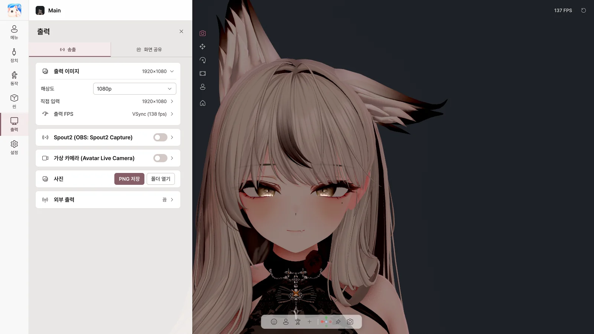

9. 출력#
출력 페이지에서 아바타 화면을 다른 프로그램으로 보냅니다. 탭은 송출과 화면 공유 두 개입니다.
| 보낼 곳 | 방법 |
|---|---|
| OBS (투명 배경) | Spout2 |
| Discord · Zoom · Teams의 카메라 | 가상 카메라 |
| Discord 게임 방송 | 화면 공유 |
| 다른 모션 앱 | VMC 출력 |
| 사진 | PNG 저장 |
출력에는 아바타와 배경만 나가고, Avatar Live의 메뉴는 나가지 않습니다. 창을 최소화하거나 트레이로 숨겨도 계속 나갑니다.
송출#

출력 이미지#
| 항목 | 하는 일 |
|---|---|
| 해상도 | 720p · 1080p · 1440p · 4K · 세로 |
| 직접 입력 | 원하는 크기 |
| 출력 FPS | 출력 프레임 레이트 |
Basic은 1080p까지, 워터마크가 표시됩니다. Pro는 4K까지, 워터마크가 없습니다.
Spout2 → OBS#
- Spout2를 켭니다.
- OBS에 Spout2 플러그인을 설치하고 Spout2 Capture 소스를 추가한 뒤 Avatar Live를 고릅니다.
- 투명 배경: Avatar Live 배경을 투명으로, OBS에서 Composite with alpha를 고릅니다.
| 항목 | 하는 일 |
|---|---|
| 송신 이름 | OBS에 보일 이름 |
| 투명도(알파) 보내기 | 투명 배경 보내기 |
가상 카메라#
- 처음 한 번 가상 카메라 설치… 를 누릅니다 (관리자 권한을 묻습니다).
- 가상 카메라를 켭니다.
- Discord·Zoom 등에서 카메라로 Avatar Live Camera를 고릅니다.
| 항목 | 하는 일 |
|---|---|
| 이미지 좌우 반전 | 좌우 뒤집기 |
| 'Avatar Live Camera'(으)로 다시 등록… | 카메라 이름이 다르게 보일 때 |
- Discord는 시작할 때만 카메라를 찾습니다. 목록에 없으면 Discord를 완전히 껐다 켜세요.
- 투명 배경은 지원하지 않습니다 (크로마키 배경을 쓰세요).
- 설치 폴더를 옮기거나 지우기 전에는
VirtualCamera\Uninstall.bat을 실행하세요.
사진#
PNG 저장으로 UI 없이 화면을 저장하고, 폴더 열기로 저장 폴더를 엽니다. 투명 배경은 투명하게 저장됩니다.
외부 출력 (VMC)#
| 항목 | 하는 일 |
|---|---|
| VMC 출력 (다른 앱으로) | 아바타의 자세와 표정을 다른 앱으로 보내기 |
| 주소 / 포트 | 받을 앱의 주소 |
| 블렌드셰이프 | 표정도 함께 보내기 |
VMC 출력은 정상 동작을 예상하지만, 받는 앱이 개발자 환경에서 아직 테스트되지 않은 실험적 기능입니다.
화면 공유#

Discord 친구에게는 게임 + 아바타 + 소리를, 나에게는 게임만 보여 줍니다. OBS가 필요 없습니다.
사용 순서#
- 공유 대상에서 게임 또는 디스플레이를 고릅니다.
- 화면 공유를 켭니다.
- Discord에서 화면 공유 → 애플리케이션 → Avatar Live Share Output을 고르고 소리를 켭니다.
- 미리보기에서 아바타 위치와 크기를 맞춥니다.
⚠️ Avatar Live를 관리자 권한으로 실행하지 마세요. Discord에 검은 화면이 나옵니다.
공유 상태#
| 항목 | 하는 일 |
|---|---|
| 화면 공유 | 켜기 / 끄기 |
| 해상도 / 프레임레이트 | Discord로 보내는 화질 |
공유 대상#
| 항목 | 하는 일 |
|---|---|
| 게임 | 공유할 게임 창 고르기 (껐다 켜도 다시 찾음) |
| 디스플레이 | 모니터 전체 공유 |
| 추가 소스 (Pro) | 창이나 모니터를 더 겹치기 (11장) |
💡 게임이 검게 나오면 게임을 테두리 없는 창이나 창 모드로 바꿔 보세요.
오디오#
| 항목 | 하는 일 |
|---|---|
| 게임 소리 | 게임 소리만 보내기 (Discord 통화·알림음은 제외) |
| 데스크톱 소리 / 추가한 앱만 / 소리 없음 | 디스플레이 공유일 때 보낼 소리 |
| + 앱 추가 | 음악 등 다른 앱 소리 더하기, 앱별 볼륨 |
공유 소리가 나가려면 Steam Streaming Speakers나 VB-Audio CABLE 같은 듣지 않는 가상 재생 장치가 필요합니다.
아바타 오버레이#
| 항목 | 하는 일 |
|---|---|
| 아바타 오버레이 | 공유 화면에 아바타 보이기 |
| 미리보기 | 드래그로 이동, 모서리로 크기, 손잡이로 회전, Alt + 가장자리로 자르기 |
| ↙ ↓ ↘ ↖ ↗ ◎ | 빠른 위치 |
| 크기 / 불투명도 / 회전 | 숫자로 조절 |
| 반전과 스냅 | 좌우·상하 반전, 비율 고정, 맞추기 |
| ⛶ | 큰 화면에서 편집 |
고급#
| 항목 | 하는 일 |
|---|---|
| 캡처 방식 강제 지정 | 자동 / 창 캡처 / 디스플레이 |
| 소스 트림 | 공유 화면 자르기 |
| Discord 오디오 장치 | 공유 소리를 재생할 장치 (헤드폰·스피커는 고르지 마세요) |
| 오디오 지연 | 영상과 소리 맞추기 |